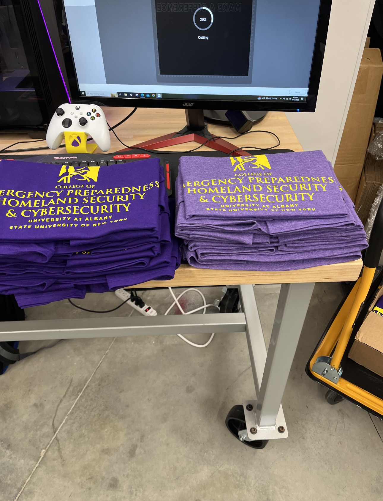
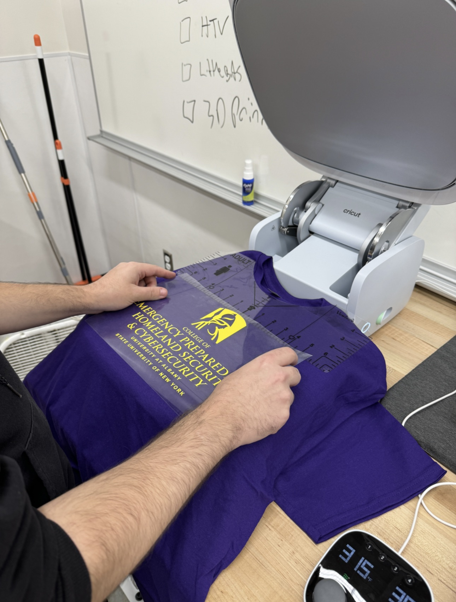

CEHC Tech based Community Support Internship
Who are we?
As a team Our role during the course of the internship at the Makerspace was to come together, be creative and use our creativity to help and make the world a better place. In the dynamic and ever-evolving field of technology, practical experience stands as a cornerstone of learning and development. My recent internship, undertaken at a cutting-edge maker space, embodies this philosophy through its commitment to community support and technological advancement. Serving both the maker space and my school, this tech-based internship offered me a unique opportunity to immerse myself in the practical aspects of technology application, event management, and community engagement.
